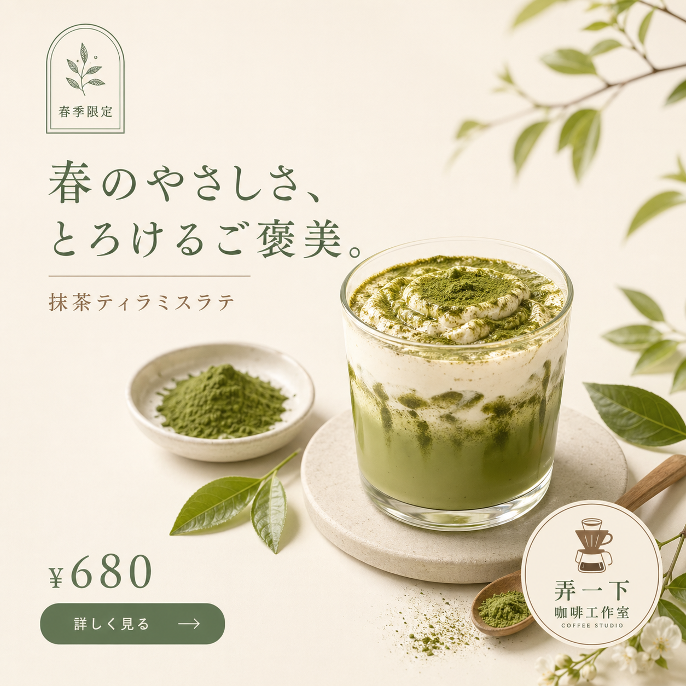
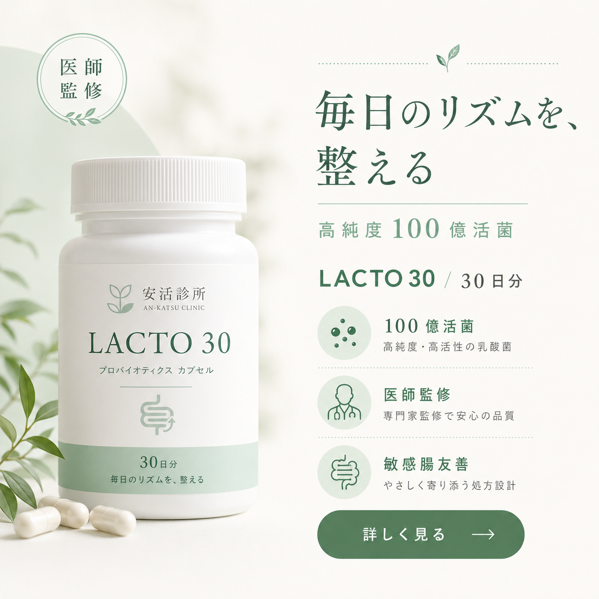
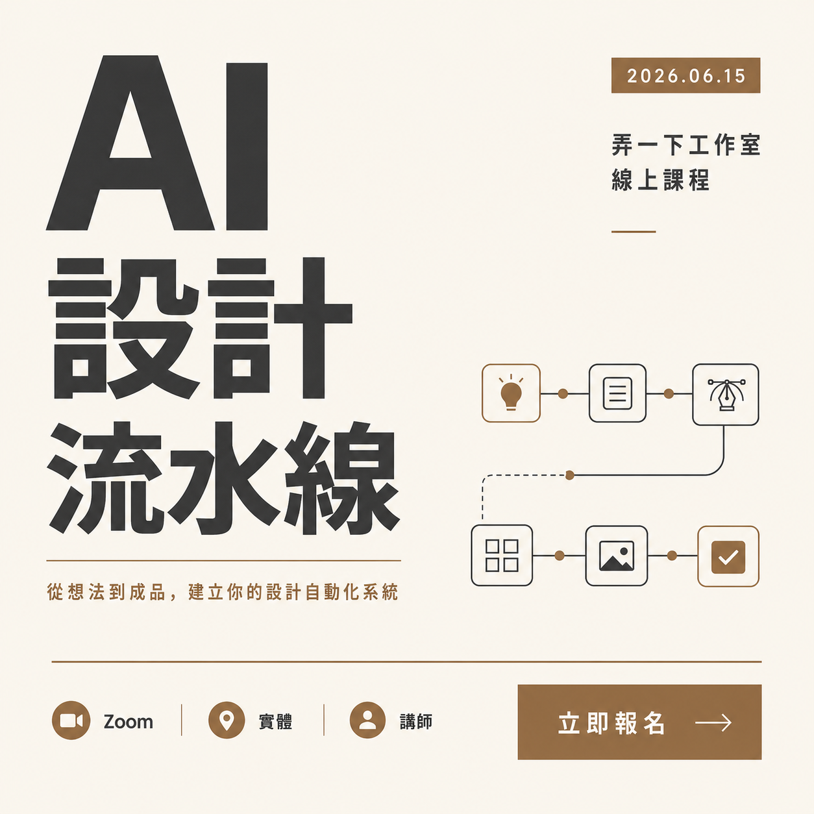
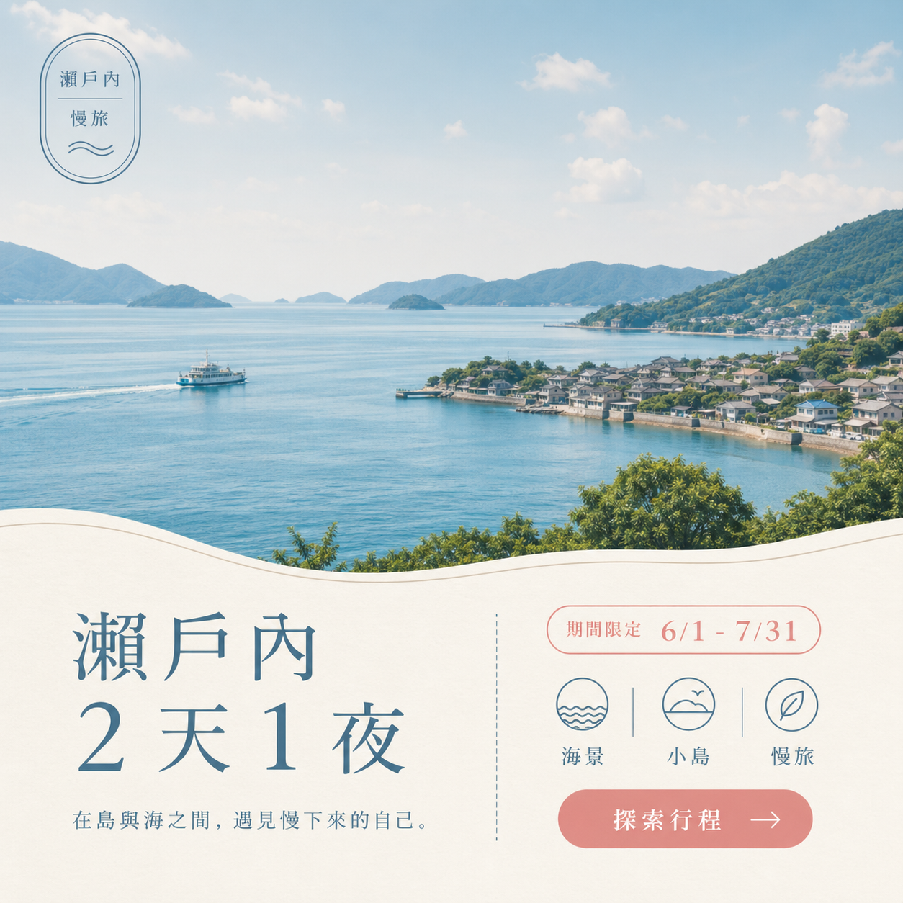
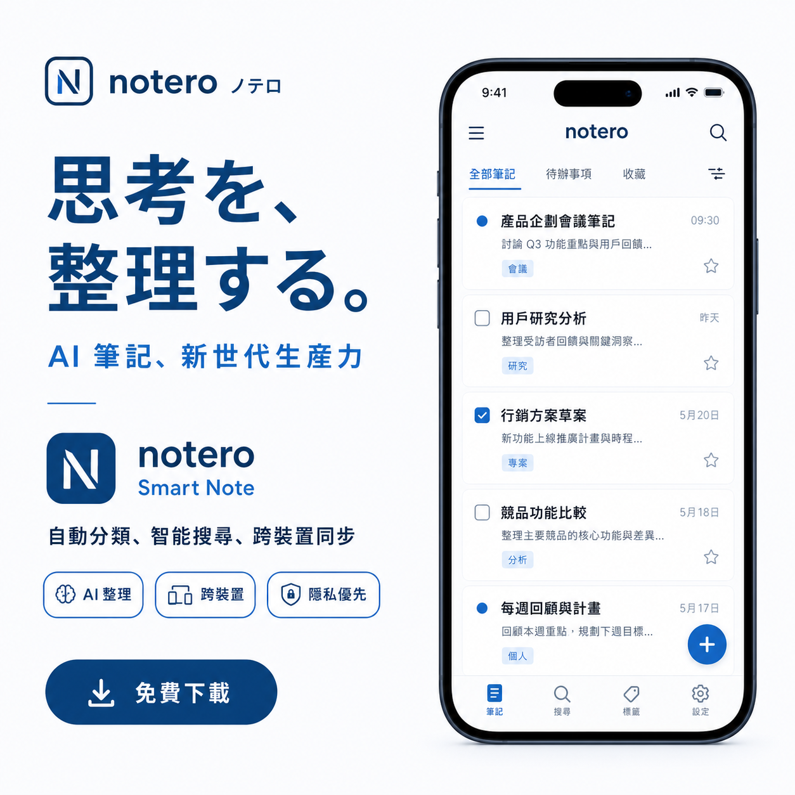

從 brief 到品牌系列整合實戰
最後一堂、收束 + 整合。把整套課程串起來看一遍、挑 1 個案例跑通流程、寫下課後一週要做的 3 件事。
- 1 張你選的案例跑出的 L4 完稿（4-步閉環走過 1 輪）
- 1 段 troubleshooting 實作（任挑 1 個症狀、用修正話術跑出 OK 版）
- 1 份「今天 / 明天 / 週末」一週計畫（3 行、每行具體可完成）
完成這 3 件就算過關。今天不教新東西、是整理 + 跑 1 次。試跑包、5 案例詳細 prompt、進階 Lookbook 都收在頁尾「講師備註」折疊區。
今天要做什麼
不必重填 DNA（PRAC4 那份就好）、不必重跑 L2（PRAC3 那張就好）。你只需要：挑 1 個整合案例（或自家素材）、跑 1-3 張新 L4。跑得卡也沒關係——卡住就放下、看下個案例。
需求 → 執行 → 驗收 → 迭代
每張廣告該分幾步？哪幾步是你做的？哪一步是 AI 做的？
把 M2-M4 學的東西串起來看，每張廣告就是這 4 步循環一輪：
┌─────────────────────────────────────────────────────────────────┐ │ 需求 執行 驗收 迭代 │ │ (PM 你) (AI 它) (PM 你) (PM 你) │ │ │ │ brief 六件套 ──→ L4 完稿 A ──→ 驗收 A 8 項清單 ──→ 保留X+修Y│ │ ↓ │ │ 同 brief ──→ L2 線稿 ──→ 驗收 B 6 項清單 ──→ 迭代或重跑│ │ ↓ │ │ L2 + 新主題 ──→ 新 L4 B / C ──→ 驗收 A ──→ 迭代 │ │ ↓ │ │ L2 + 全套DNA──→ 3 張系列 ──→ 驗收 C 5 項清單 ──→ 迭代 │ │ │ │ 你的角色 AI 的工作 你的判斷 │ │ ───────── ───────── ───────── │ │ 需求判定者 執行設計師 骨架驗收者 │ │ 系列把關者 系列把關者 │ └─────────────────────────────────────────────────────────────────┘ M2 起｜生圖 → M3 承｜轉線稿 → M4 轉/合｜反控 CH2-1/2/PRAC2 CH3-1/2/PRAC3 CH4-1/2/3/PRAC4
需求我寫、執行 AI、驗收我看、迭代我下——4 步中只有「執行」是 AI 主導，其他 3 步都是你。
要做什麼：拿你 PRAC4 跑出的某張完稿、想一下 4 個步驟你各自做了什麼動作
完成物：4 行答案（每步 1 句話）
通過標準：能口述「執行」是 AI 主導、其他 3 步你做主——不混淆
| 需求 (你) | |
|---|---|
| 執行 (AI) | |
| 驗收 (你) | |
| 迭代 (你) |
你能不能講清楚：哪一步是你下指令、哪一步是 AI 自己跑、哪一步是你做判斷？
能 → 進 cycle 2 ｜ 不能 → 重看上方總圖、回憶 PRAC4 流程
→ 下一循環：4 步閉環理解了，接下來挑 1 個案例跑這 4 步。
5 案例庫——挑 1 個跟你最相關的
餐飲 / 保健 / 教育 / 旅遊 / App——哪個案例跟你的業務 / 興趣最相關？
5 個案例都備有完整 brand-dna + L2 骨架 + 3 主題 + prompt 模板，可直接複製貼到 AI 跑。挑 1 個就好。也可全部不用、改用你 PRAC4 的 brand-dna 跑新主題。
| 案例 | 業種 | 骨架 | 風格 | 適合誰 |
|---|---|---|---|---|
| A | 餐飲 | 4 商品中心 | 日系職人 | 餐飲 / 手作店 / 季節商品 |
| B | 保健 | 1 商品左 | 日系保健 | 美妝 / 保健 / 居家 |
| C | 教育 | 5 大字堆疊 | 瑞士排版 | 課程 / 講座 / 招生 |
| D | 旅遊 | 3 風景底 | 歐陸度假 | 旅遊 / 民宿 / 地方創生 |
| E | App | 2 mockup 右 | 矽谷科技 | SaaS / 數位產品 |
點開下方案例看完整 brand-dna + prompt 模板：
案例 A咖啡店季節新品
情境：弄一下咖啡工作室年度行銷、3 季新品（日本市場模擬品牌、價格使用日圓）

brand: 弄一下咖啡工作室 風格 preset: 日系職人 色票: - primary: 鼠尾草綠 #5a7a5a - accent: 奶茶棕 #8a6a4a - bg: 奶油白 #f5efe3 禁用色: 純黑、漸層、霓虹色 字族: - headline: Shippori Mincho 700 - body: Noto Sans JP 400 語氣: 手作、職人、季節感、療癒 禁用語氣: 促銷轟炸、網路梗、CP 值口號 禁用視覺: 寫實人像、玻璃態、Comic Sans 主力骨架: 骨架 4 商品中心 × 道具環繞
- 商品（中央偏右、玻璃杯狀）
- 主標 2 行（左上）+ accent 手寫字
- 道具（左下原料盤 / 底部湯匙 / 右上葉片）
- 價格（左下）+ CTA（左下膠囊）
- 徽章（右下圓形）
| 主題 | 商品 | 道具 |
|---|---|---|
| 春 | 抹茶提拉米蘇拿鐵 ¥680 | 抹茶粉盤 + 木匙 + 綠葉 |
| 夏 | 柚子氣泡美式 ¥580 | 柚子切片 + 冰塊 + 薄荷葉 |
| 秋 | 焙茶拿鐵 ¥620 | 乾茶葉 + 木匙 + 楓葉 |
吃下以下品牌 DNA：
[貼上述 brand-dna 全部]
結構沿用：骨架 4 商品中心 × 道具環繞
本次主題：
- 商品：{春 抹茶提拉米蘇拿鐵 / 夏 柚子氣泡美式 / 秋 焙茶拿鐵}
- 季節徽章：{對應季節}
- 價格：{對應價格}
- 道具：{對應道具描述}
- 主標：{季節 + 商品名}
請產出 1:1 L4 完稿。
產完自檢：配色 / 字族 / 禁用清單是否全遵守？
案例 B保健品多產品線
情境：安活診所 3 款保健品同月推廣（日本市場模擬品牌、品名使用日文）

brand: 安活診所 風格 preset: 日系保健（清新醫療） 色票: - primary: 薄荷綠 #a8d0c0 - accent: 深綠 #4a7a5a - bg: 米白 #faf7f2 禁用色: 純黑、霓虹、高飽和紅 字族: - headline: Shippori Mincho 700 - body: Noto Sans JP 400 語氣: 清新、可信、專業不冰冷、溫和 禁用語氣: 醫療廣告誇大語、療效保證 禁用視覺: 真實人像、漸層、注射器類圖示 主力骨架: 骨架 1 商品左 × 文字右
- 商品（左 40%、白色塑膠罐 / 玻璃瓶）
- 商品右上圓徽章「医師監修」
- 主標（右上 2 行）+ 副標
- 商品名 + 容量規格、3 特徵條列、CTA 膠囊（右下）
| 主題 | 商品 | 主訴求 |
|---|---|---|
| A | 乳酸菌 30 日份 | 腸道健康 |
| B | 葉黃素軟膠囊 | 眼睛保健 |
| C | 鈣鎂錠 | 骨骼支援 |
吃下以下品牌 DNA：[貼 brand-dna]
結構沿用：骨架 1 商品左 × 文字右
本次主題：
- 商品：{乳酸菌 30 日份 / 葉黃素軟膠囊 / 鈣鎂錠}
- 主訴求：{對應主訴求}
- 3 特徵：{對應特徵 3 條}
- 徽章：医師監修
- CTA：立即了解
請產出 1:1 L4 完稿。
案例 C線上課程 3 場活動
情境：弄一下工作室 3 場不同主題講座招生（日期僅為示範、實際開班可替換）

brand: 弄一下工作室 風格 preset: 瑞士排版（極簡幾何） 色票: - primary: 深灰 #3a3a3a - accent: 奶茶棕 #8a6a4a - bg: 米白 #f8f5ef 禁用色: 漸層、多色組合、霓虹 字族: - headline: Helvetica / Noto Sans 800（粗黑） - body: Noto Sans 400 語氣: 紀律、清楚、沒廢話、誠懇 禁用視覺: 裝飾插圖、寫實照片、大量 emoji 主力骨架: 骨架 5 大字堆疊 × 小圖輔助
| 主題 | 標題 | 日期 |
|---|---|---|
| A | AI 設計流水線（本課！） | 2026.06.15 |
| B | n8n 自動化進階 | 2026.07.20 |
| C | NotebookLM 知識庫實戰 | 2026.08.10 |
吃下以下品牌 DNA：[貼 brand-dna]
結構沿用：骨架 5 大字堆疊 × 小圖輔助
本次主題：
- 課程標題：{擇一}
- 日期 tag：{對應日期}
- meta 資訊：{Zoom / 實體 / 講師}
- CTA：立即報名
請產出 1:1 L4 完稿。
案例 D地方旅遊 3 行程
情境：瀨戶內慢旅 3 條路線推廣（日本 / 台灣旅遊路線混用、期間日期僅為示範）

brand: 瀨戶內慢旅 風格 preset: 歐陸度假（明亮陽光） 色票: - primary: 海藍 #4a8aaa - accent: 珊瑚粉 #e8a8a0 - bg: 米白 #f5f1e8 禁用色: 純黑、深灰、漸層、霓虹 字族: - headline: Shippori Mincho 700 - body: Noto Sans 400 語氣: 放鬆、悠閒、嚮往、療癒 禁用視覺: 商業感過重、玻璃態 主力骨架: 骨架 3 風景底 × 資訊下
| 主題 | 路線 | 期間 |
|---|---|---|
| A | 瀨戶內 2 天 1 夜 | 6/1–7/31 |
| B | 阿里山溫泉小旅 | 9/1–10/31 |
| C | 蘭嶼自由行 4 天 3 夜 | 春季限定 |
吃下以下品牌 DNA：[貼 brand-dna]
結構沿用：骨架 3 風景底 × 資訊下
本次主題：
- 路線名稱：{擇一}
- 期間徽章：{對應期間}
- 風景主體：{海景 / 山景 / 島嶼海岸}
- 3 特徵：{對應特徵 3 條}
- CTA：探索行程
請產出 1:1 L4 完稿。
案例 EApp 三波行銷
情境：notero 筆記 App 三個行銷階段（日本市場模擬品牌、品名使用日文）

brand: notero ノテロ 風格 preset: 矽谷科技（極簡未來） 色票: - primary: 深藍 #1a4d7a - accent: 天藍 #5a9ad0 - bg: 白 #ffffff 禁用色: 暖色（橘黃紅）、漸層、紋理 字族: - headline: Inter / SF Pro 700 - body: Inter / SF Pro 400 語氣: 現代、極簡、效率、信賴 禁用視覺: 手寫字、寫實照片、復古元素 主力骨架: 骨架 2 mockup 右 × 文字左
| 主題 | 階段 | 主訴求 |
|---|---|---|
| A | 新品上市 | 思考整理工具 |
| B | 週年慶 30% OFF | 限時升級 Pro |
| C | 會員推薦活動 | 邀請朋友拿月免費 |
吃下以下品牌 DNA：[貼 brand-dna]
結構沿用：骨架 2 mockup 右 × 文字左
本次主題：
- 行銷階段：{擇一}
- mockup 畫面：{對應頁}
- 3 特徵標籤：{依階段填}
- CTA：{免費下載 / 立即升級 / 邀請朋友}
請產出 1:1 L4 完稿。
要做什麼：A-E 5 個案例（或自家素材）擇 1，寫下選擇 + 選擇理由
完成物：1 個字母（或「自家」）+ 1 句理由
通過標準：理由能對應到「業種相關 / 想體驗風格 / 業務需求」其一
| 選哪個 | |
|---|---|
| 為什麼 |
你選的案例，brand-dna + L2 骨架 + 3 主題 + prompt 模板都展開看過了嗎？
看過 → 進 cycle 3 跑 AI ｜ 沒看 → 點開選的案例詳細展開看一遍
→ 下一循環：選好了，把 prompt 丟 AI 跑出 1 張 L4。
複製 + 跑 + 驗收 8 項
挑好案例後、怎麼最快跑出 L4 + 對 brand-dna 是否遵守做自檢？
本循環走必要 4 步、每步 2-3 分鐘。換主題、跨張系列是選用延伸，時間不夠跳過。
從你選的案例段、複製 brand-dna 那塊文字、貼進 AI 對話。
從案例段複製 prompt 模板、把變量換成「3 主題其中 1 個」（例：案例 A 的春季抹茶拿鐵）。
等 AI 產出。ChatGPT 或 Gemini 皆可。
把以下 prompt 貼給 AI 自檢：
請對剛才的 L4 對照 8 項結構清單自檢： 1. 商品位置 2. 主標位置 3. 徽章位置 4. CTA 位置 5. 配色（DNA 3 色） 6. 字族 7. 視覺動線 8. 多餘元素 通過 __/8 項。
1 張 L4 截圖 + AI 自檢結果（_/8）
跑出 1 張 L4 + 拿到 AI 自檢結果（不要求 8/8 全過、3/8 也算）
卡住怎麼辦？
- 配色不對 → 看 brand-dna 裡的「禁用色」是否有貼進 prompt、沒貼就補
- 骨架跑掉 → 在 prompt 加 1 句「結構必須與 L2 骨架描述完全一致、不可重新構圖」
- 跑了 3 次還是不行 → 直接放下、看下個案例的 prompt——本單元目標是體驗、不是達標
- AI 配額爆 → 切換另一個平台、或紙上想像「如果這 prompt 跑出來、應該長什麼樣」
| 主題選哪個 | |
|---|---|
| AI 平台 | |
| 自檢結果 | |
| 1 段觀察 |
你拿到 AI 自檢結果了嗎？知道哪幾項過、哪幾項不過嗎？
是 → 進 cycle 4（選你最不過的 1 項做 troubleshooting）｜ 沒跑 AI → 看案例 prompt 結構也算（紙上想像）
跑得好不好不重要、跑通流程就行。整合工作流的手感比完美交付物更重要。
→ 下一循環：自檢結果有不過的項目？查 troubleshooting 表、貼修正話術。
8 種症狀速查 — 拿到圖不對勁、查表貼話術
AI 跑出的圖不對勁時、不要瞎猜原因——按下表診斷症狀、複製對應「修正話術」貼回同對話即可。
這張表是結課後工具書——不是要背、是課後 / 卡關時翻：
| 症狀 | 診斷｜檢查 brief 第幾欄 | 修正話術（同對話貼給 AI） |
|---|---|---|
| 商品形狀錯誤 | brief 欄位 2「商品」不夠具體 | 請把商品改成 [具體描述：例如「透明玻璃杯雙層分層、下抹茶綠 + 上奶霜、頂層撒抹茶粉」] |
| 色調偏離預期 | brief 欄位 6「風格 preset」配色沒寫具體 hex | 請把配色改成 [hex] + [hex] + 不超過 3 色、避免漸層、純黑、霓虹色 |
| 文字錯字 / 重複 | 文字內容太少、AI 補寫又犯錯 | 請只保留正確的『XXX』那一行、刪除錯字版本 |
| 字體名出現在圖中 | prompt 末尾沒加防外洩 footer | 請移除圖中『Shippori Mincho』『Noto Sans JP』字樣、這些是字體指令、不是要顯示的內容 |
| 像產品攝影、不像商業廣告 | 商業資訊元素不夠 | 請補上完整商業資訊元素：NEW + 季節 tag + 主標 + 副標 + 商品名 + 價格 + logo + 期間共 7 個 |
| 版型不對 | 必要元素不符該版型結構 | 請改回 [X] 版型結構：[該版型核心特徵、例：G 促銷版＝上半 60% 大字優惠 + 下半 40% 商品 + CTA + 黑底黃字強對比] |
| 跨產業時舊配色滲透 | 跳過了線稿中轉 | 請先把這張轉成灰階線稿（保留輪廓、移除色彩、文字換佔位符）、再以線稿為基礎產 [新主題] 的新版本 |
| 系列 3 張看起來不像同品牌 | 品牌小卡 3 件事沒鎖死 | 這 3 張要套同一份品牌規格：配色 [3 色固定] + 字體 [2 種固定] + 風格 [3 詞固定]、只有商品內容換 |
點開下方對照組看「失敗 (NG) → 修正 (OK)」實圖、知道每個症狀長什麼樣：
① 像產品攝影 → 真正的商業廣告
症狀：純商品 + 1 行字、像 unsplash 圖庫照。修正：補上完整商業資訊元素 7 個。


② 字體名出現在圖中 → 乾淨
症狀：圖中出現「Shippori Mincho」「Noto Sans JP」字樣（字體規範被誤當文字）。


③ 文字錯字 / 副標重複 → 正確單行
症狀：副標出現 2 行（一行錯字 + 一行正確）、AI 兩行都留。

④ A 主視覺塞太滿 → 精簡到 7 元素
症狀：塞 12+ 個資訊元素、商品被擠成 35%、視覺主導性消失。

⑤ 版型錯配（H 生活情境配 G 促銷文字）→ 改回正確版型
症狀：場景柔和情境（H）但文字塞促銷大字（G）——版型訴求嚴重打架。


⑥ 跨產業時舊配色滲透 → 透過線稿乾淨繼承
症狀：直接從抹茶完稿改成旅遊主題、結果色調帶綠、字體仍是日系明朝。


本頁圖片為 AI 生成練習作品、不可商用；NG 版為刻意產出的失敗對照範例、用作教學示意。
要做什麼：對著 cycle 3 的自檢結果、挑最不過的 1 個項目、查上表症狀、複製對應修正話術貼回同對話、再跑 1 次
完成物：症狀名 + 用了什麼話術 + 修完結果（過了沒）
通過標準：完成 1 次「症狀 → 話術 → 重跑」循環。沒跑通也算（重點是知道流程）
| 哪個症狀 | |
|---|---|
| 用了什麼話術 | |
| 修完結果 |
你完成 1 次「症狀診斷 → 修正話術 → 重跑」循環了嗎？
是 → 進 cycle 5 寫一週計畫 ｜ 否 → 至少看完 8 症狀表、知道課後遇到時怎麼查
多數情況 1 次修正就 OK。連續修 3 次仍卡、表示 brief 結構性問題、回 CH2-2 重新填六件套。
→ 最後一個循環：把今天學的、變成課後 7 天會做的具體 3 件事。
課後一週計畫——今天 / 明天 / 週末各 1 件
課程結束後 7 天、你會做的 3 件「真的會做」的具體小事是什麼？
你帶走的不只是幾張圖、是個人品牌資產庫：
個人品牌資產庫 v1
│
├─ brand-dna.md（PRAC4 那份、或今天案例其中一個）
├─ L2 骨架（PRAC3 那張、或今天案例的描述）
├─ 系列完稿（PRAC4 + 今天跑的 = 3-6 張）
│
├─ prompt 模板（5 類）
│ ├─ 生圖 prompt（brief 六件套）
│ ├─ L2 反推 prompt
│ ├─ 跨產業套用 prompt
│ ├─ 品牌繼承 prompt
│ └─ 驗收提問 A / B / C / D
│
└─ 思考工具
├─ PM 三件事（講清楚 / 看做得行不行 / 確認系列像同品牌）
├─ 4 步閉環（需求 / 執行 / 驗收 / 迭代）
├─ 8 用途版型速查表
└─ 8 troubleshooting 症狀表（cycle 4）
要做什麼：寫下「今天回家 / 明天 / 這週末」各 1 件具體可完成的小事
完成物：3 行、每行不超過 30 字、每件 ≤ 30 分鐘
通過標準：每件都「具體 + 可量化 + 可在指定時間完成」
不要寫：「我要把所有產品都做一遍系列」（太大）、「我會持續學習」（空泛）
| 今天回家 | |
|---|---|
| 明天 | |
| 這週末 |
- 每行有具體動詞嗎？（「整理」「跑」「上傳」、不是「看看」「想想」）
- 每行有可量化的範圍嗎？（「1 張」「3 個 prompt」、不是「一些」「幾個」）
- 每行能在指定時間段內完成嗎？（30 分鐘以內）
3 條全過 → 進收束 ｜ 任一不過 → 改寫得更具體
小、具體、可完成的 1 件事——比「完美計畫」實用 100 倍。
收束 — 你的工作語言
整套課程下來、你帶走的不是「8 版型」「7 風格 preset」「4 驗收」這些名詞——
帶走的是「不變成設計師、用 PM 思維跟 AI 協作、把每張廣告變成可重複用的品牌資產」的工作方式。
明天打開 AI、你不會再說「幫我做一張好看的咖啡店廣告」——你會說：
「吃下這份 DNA + 骨架、為本週新品『冬季薑汁可可』產出 L4、自檢 8 項清單。」
這就是你課後的日常工作語言。課程結束、祝你接下來每張廣告都是品牌資產、而不是一次性物料。
→ 進階挑戰：想把品牌做成多頁網站視覺（4:3 Lookbook 6-8 格）？翻頁尾「講師備註」折疊區的「進階挑戰｜Lookbook」段。
📋 講師備註與延伸資料（學員可跳過、課後展開）
本區內容：教學意圖、試跑包準備清單、3 條常見疑惑、進階挑戰 Lookbook 完整段落。
① 教學意圖（本單元設計理由）
CH5-1 是整套課程的收束——不是教新東西、是把 M2-M4 學的內容串起來看一次。
5 案例設計理由：學員背景多元（餐飲 / 教育 / 旅遊 / SaaS / 保健都有可能），每人挑「跟自己最相關」的案例最有感。5 案例覆蓋 5 個常見業種、5 種骨架、5 種風格 preset——讓學員體會「同套工作流可套用到完全不同領域」。
循環順序設計：
- Cycle 1 4 步閉環 = 內化整套課的工作流總圖
- Cycle 2 案例選擇 = 訓練「PM 決策」（不是被指派、是自己選）
- Cycle 3 跑 L4 = 完整體驗工作流
- Cycle 4 troubleshooting = 結課後自己卡關時也能查表解決
- Cycle 5 一週計畫 = 確保學員真的會帶回工作場域
② 試跑包準備清單
需求段：4 步閉環 ASCII 流程圖、口訣「需求我寫、執行 AI、驗收我看、迭代我下」
設計段（核心）：5 案例完整資料庫（A 餐飲 / B 保健 / C 教育 / D 旅遊 / E App），每案例含 brand-dna + L2 骨架 + 3 主題表 + prompt 模板
實作段：6 Step 流程引導（複製 DNA → 改 prompt → 跑 AI → 驗收 A → 換主題選用 → 跨張 C 選用）+ 卡點處理表 + 「用自家素材替代」說明
驗證段：個人品牌資產庫結構樹（ASCII）+ 課後一週計畫表（今天 / 明天 / 週末 3 行）+ 結尾金句
備援：學員無自家素材時用 5 案例其一；AI 配額爆切換另一平台或紙上想像；教室時間壓縮至 30 min 砍 cycle 4 troubleshooting + cycle 5 提早結束
明確不準備：固定示範圖（學員自己跑）、時間壓力（強調輕鬆收束）、「不能查資料」規則（鼓勵翻看講義）
③ 常見疑惑 3 條
疑惑 1｜「我課後真的能用得上嗎？」
真實業務的 prompt 跟案例庫的差異只有六件套變量。brand-dna 是一次寫、半年用。第 1 個月會不順、這是正常學習曲線。建議：第 1 個月只用 1 個骨架 + 1 個 DNA、跑 5-10 張累積手感再擴張。
疑惑 2｜「AI 跑出來不夠美怎麼辦？」
AI 的天花板是「中等偏上的設計平均值」——不會超越專業設計師、但對中小品牌已夠用。你是 PM 不是美術總監——不是判斷「美不美」、是判斷「能不能用」。要更美：交付前用 Canva 補素材 / Firefly 重製。長期心態：AI 跑出 80% 美感 + 你的 100% 結構控制 = 中小品牌的最佳成本平衡。
疑惑 3｜「DNA 寫一次真的能用半年嗎？」
DNA 不是永久不可動的合約、是當前階段的視覺規格書。有效期 3-12 個月。半年後 review 哪些禁用過嚴 / 配色微調 / preset 是否仍適合。升級不是「重寫」是「改 1-3 段」。真要大改版（換 logo）：重填一份、跟舊 DNA 並存。
④ 進階挑戰｜多頁品牌識別 Lookbook（選做、不是必修）
適用對象：學完整套、想再進一階的學員（不做也能畢業）。產出規格：1 張 4:3 圖、含 6-8 格網站頁面拼貼（首頁 + 故事 + 產品 + 系列 + 聯絡 + 形象）——適合放 portfolio 或客戶提案。
流程（30 min）：
1. 選風格（3 min）：簡約 / 活力 / 科技 / 自然 / 復古 / 奢華 / 藝術 7 選 1。本課主推「自然 organic」（與 PRAC4 brand-dna 同色家族）。7 風格適合業種：簡約→家具香氛、活力→氣泡飲零食、科技→3C SaaS、自然→保養有機、復古→餐酒館、奢華→精錶珠寶、藝術→展覽創意工作室。
2. meta-prompting 自動產 prompt（10 min）：把以下模板貼進 ChatGPT / Gemini（不是直接給生圖 AI），讓 LLM 自動產出完整生圖指令：
我想為一家名為 [品牌] 的 [產品 / 服務] 品牌、設計一份 [風格] 風格的多頁網站品牌識別。 請依以下需求、產出最終生圖指令、讓我貼給生圖 AI。請直接生成中文文字指令、不用解釋。 整體品牌應呈現出 [核心關鍵詞 3 個]、結合 [業種特性]、定位 [高端 / 親民 / 實驗性]。 視覺需呈現 [對比特質 A] 與 [對比特質 B]。 採用 [配色策略] 視覺識別、搭配 [視覺元素：幾何 / 流體 / 網格] 與 [字體風格]。 影像風格 [寫實產品 / 3D 渲染 / 拼貼 / 自然光]。 頁面包含：首頁、產品頁、品牌故事頁、產品系列頁、聯絡頁、形象照頁。 輸出比例 4:3、品牌 Lookbook 方式呈現、採用非對稱、解構式、模組錯位排列。
3. 生圖 + 驗收（15 min）：把 LLM 產出的 prompt 貼到 Gemini / ChatGPT 跑 4:3 Lookbook、用 4 件事自檢——風格一致性 / 結構合理性 / 業種對位 / 整體完成度。
3 種風格參考圖（簡約 / 自然 / 奢華）：


本頁圖片為 AI 生成練習作品、用作教學示意、不可商用。完整教學資源：_sources/gen-image/7-brand-style-system.md
為什麼選做：時間成本高（1 張 30-60 min）、學習曲線陡（需熟悉 meta-prompting）、CP 值看用途（日常單張不需要、客戶提案大幅加分）。建議優先順序：先跑 1 張 8 版型單品 → 再跑品牌 3 張系列 → 進階挑戰才做 Lookbook。